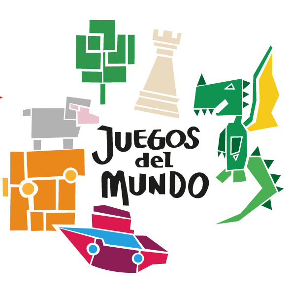
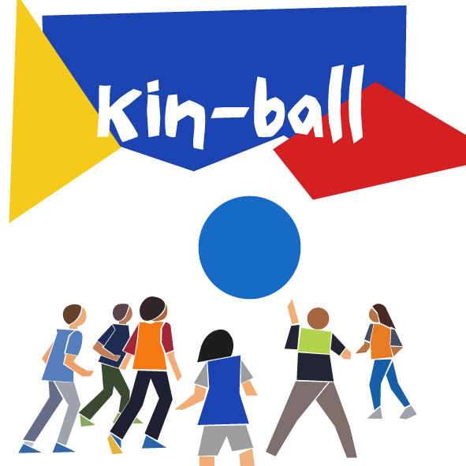

Juegos que viajan, experiencias que se comparten
Juegos para el Mundo es una propuesta del Molino que invita a descubrir nuevas formas de jugar. A través del intercambio con otros países, centros y comunidades, llegan juegos de diferentes lugares que se comparten, se aprenden y se ponen en práctica.
En el Molino, el equipo conoce cada juego, aprende sus reglas y experimenta sus posibilidades. Pero la experiencia no termina ahí: después, los juegos también salen de sus puertas y viajan hacia otros centros y espacios, para que más personas puedan conocerlos y disfrutarlos.
Un juego, muchos lugares
La propuesta funciona como un recorrido: los juegos llegan, se descubren, se comparten y vuelven a ponerse en movimiento.
Descubrir
Conocemos juegos que vienen de otros países y de diferentes centros, incorporando nuevas ideas y maneras de jugar.
Aprender
En el Molino experimentamos con cada propuesta, aprendemos sus reglas y descubrimos cómo jugar en equipo.
Compartir
El equipo lleva los juegos a otros centros y comunidades, para que nuevas personas puedan conocerlos y sumarse.
¡Una pelota gigante y un montón de equipo!
Kimball
Entre los juegos que forman parte de esta propuesta, el Kimball es uno de los más representativos. Su protagonista es una pelota gigante que convierte el juego en una experiencia colectiva, donde la participación y el trabajo en equipo son fundamentales.
Es uno de los juegos que más acompaña al equipo del Molino en sus visitas a otros centros y espacios. Una propuesta que despierta curiosidad, reúne a los participantes y demuestra que jugar también es una forma de encontrarse.

¡Los juegos no se quedan quietos!
Cada encuentro es una oportunidad para aprender algo nuevo, conocer otras formas de jugar y llevar la experiencia un poco más lejos.